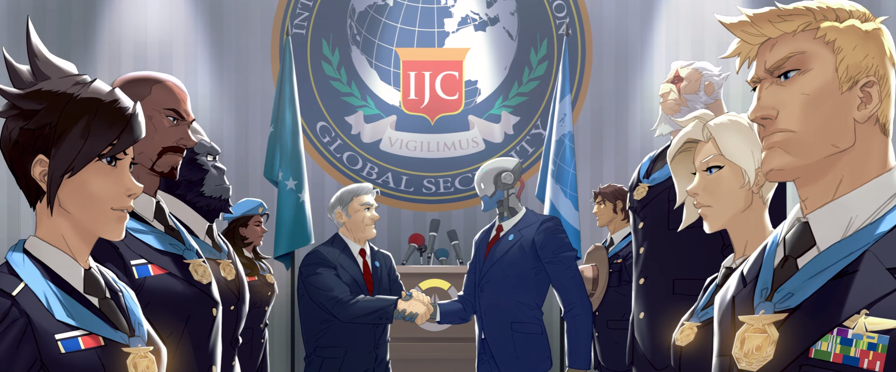
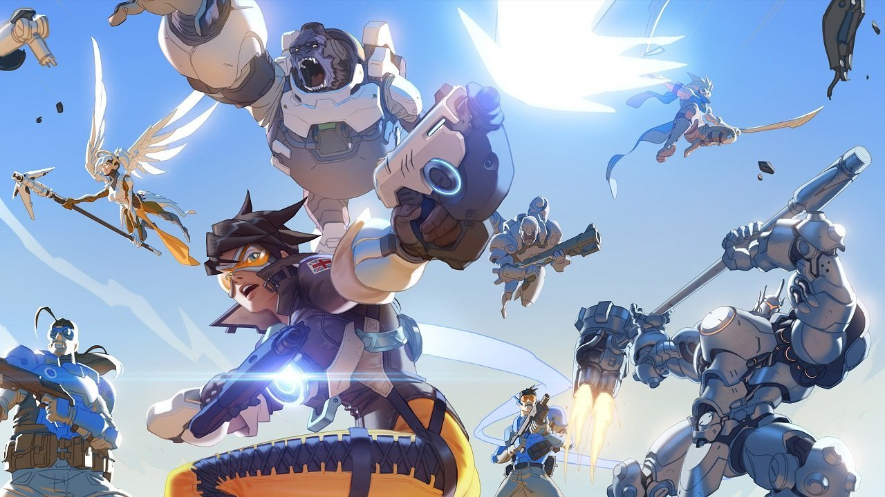
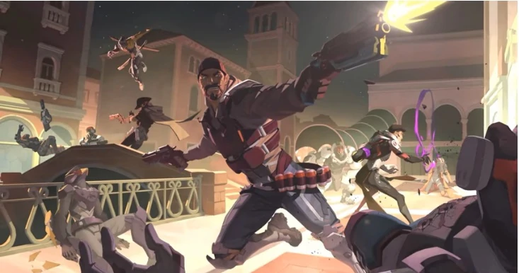
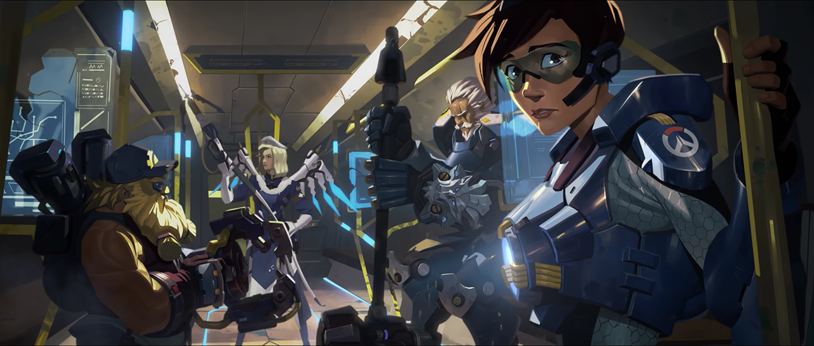
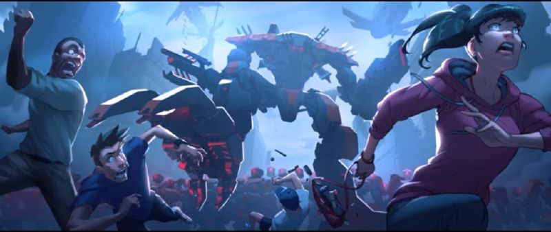
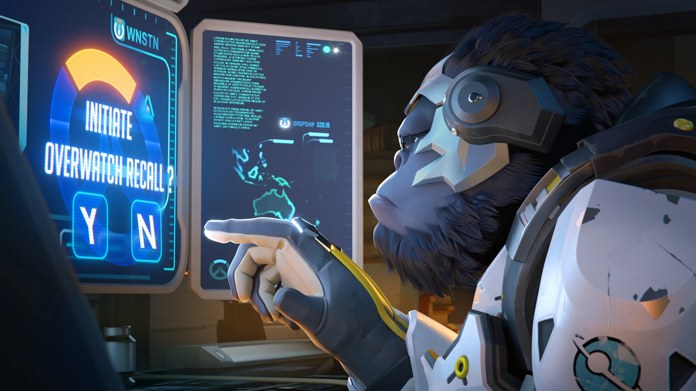
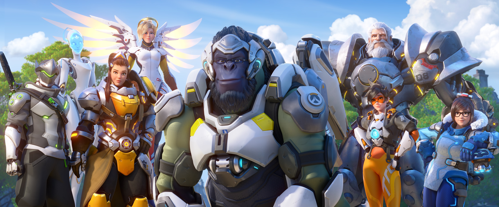

El origen
Overwatch fue fundada bajo la ordenanza de las Naciones Unidas con el objetivo de detener la crisis global en la que se había convertido la guerra contra los ómnicos, una guerra diferente a cualquiera a la que la humanidad se hubiese enfrentado hasta ese momento. Ningún país o nación estaba teniendo éxito intentando detener las hordas de robots en sus fronteras, pero algunos soldados excepcionales lograron destacar con extraños y novedosos métodos de luchar. Las Naciones Unidas reunieron a estos soldados a lo largo y ancho de todo el mundo, y formaron un grupo de asalto de élite bautizado como Overwatch.
Estaba formado por científicos, soldados, aventureros y prodigios, y tenían intención de llevar a cabo una guerra diferente contra los ómnicos. Gabriel Adawe, una arquitecta, fue clave en su fundación y el mando de este nuevo grupo quedó en manos de Gabriel Reyes, miembro de un programa secreto de súper soldados procedente de Estados Unidos. Y aunque Reyes fuese el comandante a efectos prácticos, la estructura de la organización la moldeó el súper soldado Jack Morrison, para que fuesen un verdadero grupo efectivo y unido. Otros miembros fundadores fueron: Ana Amari, Mina Liao, Reinhardt Wilhelm y Torbjörn Lindholm.
Uniendo sus fuerzas a pesar de ser un grupo tan diferente y variado, Overwatch centró sus esfuerzos en encontrar los protocolos de control y mando de las hordas ómnicas. Una de estas operaciones tuvo lugar en Rio de Janeiro, y después de actos heroicos que supusieron ponerse en peligro y muchos sacrificios, consiguieron destruir todos los ómnicos dejando inertes a los ejércitos de robots. Habían salvado el mundo y se habían ganado su respeto y admiración. Por sus servicios, declararon a Jack Morrison como nuevo comandante, aunque eso a Gabriel Reyes no le molestó.

La época dorada
Aunque habían cumplido su misión y el mundo ya no los necesitaba, el grupo de asalto de élite Overwatch, se convirtió en una fuerza internacional para mantener la paz en todo el mundo, otorgándosele nuevos recursos y fondos para que tuviesen una influencia global. Durante los siguientes años, mantuvieron la paz e inspiraron una época de exploración, innovación y descubrimiento, promoviendo investigaciones de medicina, exploración espacial, biología, química, infraestructura y climatología. De esto último se establecieron puntos de observación ecológica para mantener el seguimiento del clima del planeta. Ladrones, terroristas, dictadores, ninguno de ellos duraba demasiado en la mira de Overwatch, que hizo la estabilidad global su mayor objetivo, y el mundo entero estaba agradecido de estar bajo su protección.
Durante sus años en activo, los carteles de reclutamiento de Overwatch eran algo cotidiano y sus miembros tenían una presencia constante en los medios de comunicación. Con el paso de los años Overwatch se convirtió en una institución global y reclutaron nuevos agentes; aquellos que crecieron durante este periodo son conocidos como la “generación Overwatch”. Para estos niños, Overwatch era un símbolo de esperanza y se les enseñó que ellos representaban lo mejor de la humanidad.
El grupo mantuvo una red internacional de comunicación y poseía la tecnología más avanzada en todos los ámbitos. Nuevos agentes se unían a sus filas al tiempo que los más mayores de retiraban, muchos de forma forzada como el caso de Reinhardt Wilhelm. Realizaron operaciones para desmantelar el grupo terrorista Talon y el Clan Ninja Shimada. Y aunque los primeros no consiguieron su empresa, el imperio de la familia Shimada cayó.
Por este motivo, comenzó a adoptarse un enfoque más militarizado para mantener la paz, lo que causó cierta tensión interna.

El anochecer
Veinte años habían pasado desde su fundación, y con el tiempo la influencia de Overwatch había disminuido, además se encontrarse bajo sospecha de corrupción y sedición. La organización fue acusada de negligencias en importantes misiones, corrupción y mala gestión, proliferación de armas, abusos de derechos humanos y cosas aún peores. A Overwatch nunca le habían faltado detractores, incluso en su época dorada, pero ahora eran más críticos que nunca y exigían que un grupo tan poderoso tuviese un control estricto. Se levantaron rumores de misiones secretas encubiertas, que llevaban a cabo misiones tales como asesinatos, secuestros y coacción, que la gente consideró que eran fantasías conspiranoicas. Pero a medida que pasaba el tiempo, las críticas se hacían más complicadas de ignorar. Las controvertidas misiones avivaron la indignación pública y algunos de los agentes más famosos de Overwatch se vieron obligados a retirarse antes de caer en desgracia. Las protestas estallaron pidiendo el cese de la organización; después de años de servicio, ahora la gente consideraba que Overwatch era el problema del mundo. El incidente de Venecia fue la gota que colmó el vaso, saliendo Blackwatch a la luz. Cuando se descubrió que la deshonrada científica Moira O’deorain había estado trabajando para ellos, de poco sirvió que los altos mandos de Overwatch negasen cualquier conocimiento de ello. Años más tarde, la periodista Olympia Shaw, experta en Overwatch, reflexionó que si ese hubiese sido el final de la organización, con el paso del tiempo la gente habría aceptado aquello como pasos en falso inevitables por la burocracia envejecida y la necesidad de un cambio de mando, y los habría perdonado. Pero no fue así.

El anochecer
Diez años antes de la actualidad, Overwatch desmanteló el Proyecto Anubis en Egipto, lo que provocó graves consecuencias para El Cairo y Egipto.
Ocho años antes de la actualidad, las instalaciones en Oslo fueron atacadas, y el comandante Morrison inició una investigación al respecto. Informó en los medios de comunicación que tenían varios sospechosos pero no quiso dar más detalles. Poco después, las instalaciones de Blackwatch en Roma sufrieron otro ataque, que costó la vida de muchos agentes, y descubrieron que Antonio había sido la mano que había guiado ambos ataques. Jack Morrison y Gabriel Reyes no se ponían de acuerdo en qué hacer; mientras que el comandante de Overwatch prefería hablar con el gobierno italiano, el comandante de Blackwatch sabía que Antonio estaba muy bien conectado y que se libraría de cualquier cargo. Con el objetivo de llevar a Antonio a la base de Overwatch para ser interrogado, Reyes reunión un equipo de agentes de Blackwatch, formado por Genji Shimada, Moira O’deorain, Jesse McCree y él mismo, dirigiéndose a Rialto. En lo que se conocería como “el incidente de Valencia”, el equipo se infiltró en la mansión de Antonio. Las cosas no fueron según lo planeado y Reyes terminó matando al italiano, obligando a sus agentes y a él mismo a salir de allí como pudieron, abriéndose paso entre los soldados de Talon. Aunque Morrison se enfureció, Reyes en su informe señaló que los planes no siempre salían como se esperaba y se mantuvo firme en las decisiones que había tomado. Este incidente supuso que Blackwatch saliese a la luz años más tarde.
Siete años antes de la actualidad, una nueva amenaza surgió. King’s Row, conocida ciudad inglesa por haber sido un lugar importante de protestas anti-ómnicas, había sido atacada y tomada por el grupo Null Sector. Valiéndose de unidades Bastion y OR-14, atacaron, tomaron el corazón de King’s Row llevándose por delante miles de vidas. Overwatch tenía prohibido involucrarse en el conflicto, pero ignorando esto, Jack Morrison envió a un equipo de asalto formado por Lena Oxton, Reinhardt Wilhelm, Torbjörn Lindholm y Angela Ziegler para liberar la ciudad. Tuvieron éxito en su misión y salvaron a la alcaldesa de King’s Row y al líder de los shambali Tekharta Mondatta, que habían sido tomados como rehenes Seis años antes de la actualidad, Jack Morrison estaba siendo sometido a grandes presiones para disolver Overwatch. Pero no podía rendirse cuando estaban tan cerca de detener a Talon. Habían conseguido detener al ómnico Maximilien, contable de la organización terrorista, y en una negociación con este les dio información sobre la ubicación de Doomfist y pruebas para inculparle. Doomfist fue detenido en Singapur después de un enfrentamiento con el equipo de asalto de Overwatch. .

El anochecer
En los últimos años de existencia de Overwatch, Blackwatch salió a la luz, acompañado de historias de asesinatos, coacciones, secuestros, torturas y cosas peores. Los gobiernos de todo el mundo pidieron a las Naciones Unidas que pusiesen punto y final a Overwatch, alegando “violaciones agresivas y reiteradas de la soberanía de incontables países”.
Un comité especial de las Naciones Unidas inició un larga investigación sobre el asunto, y a medida que la investigación avanzaba, la desconfianza pública aumentaba. La base suiza de Overwatch fue destruida en un aparente accidente, y entre las víctimas se encontraban Jack Morrison y Gabriel Reyes.
Las Naciones Unidas sentenciaron que tan solo había sido un accidente, pero informes anónimos indicaban que un enfrentamiento había desgarrado Overwatch desde dentro: a un lado Jack Morrison dispuesto a mantener lo que quedaba de la organización unida, al otro Gabriel Reyes cuyas intenciones siguen siendo desconocidas hasta el día de hoy. El enfrentamiento entre estos dos hombres desencadenó una explosión que acabó con sus vidas y las de muchos otros. Años más tarde, Ana Amari diría que aunque Jack Morrison había asumido el papel de comandante de Overwatch, después de todo solo había sido un soldado y los soldados solo podían salvar el mundo, no cambiarlo.
La pérdida de su base en Suiza y la muerte de dos de sus líderes, fueron los dos espadazos que terminaron de matar a Overwatch. A raíz de esto, toda la verdad salió a la luz, de todo lo que la organización había hecho en las sombras, hasta tal punto que incluso los más férreos defensores de Overwatch tuvieron que agachar la cabeza y pedir su disolución. Las Naciones Unidas desmantelaron Overwatch, y el grupo cedió a la presión y finalmente se disolvió al completo. Treinta años después de su fundación, había caído en desgracia, y sus antiguos agentes fueron objeto de burla y desconfianza. La Ley de Petras consideró que cualquier actividad de Overwatch sería declarada ilegal.
Pocas personas en aquel entonces dudaron que fuese la decisión correcta, a su parecer, Overwatch había sido el problema desde tiempo atrás para la paz, la estabilidad y el crecimiento global.

El mundo sin Overwatch
Cinco años han pasado desde entonces, y para la población civil, la naturaleza de la caída de Overwatch sigue siendo un misterio. Existen sospechas sobre que alguien provocó su caída, pero tan solo son rumores y susurros en las esquinas. Pero desde su final, el mundo se ha convertido en un lugar mucho más oscuro. Las tensiones entre humanos y ómnicos nunca habían sido tan altas, y los líderes políticos acusaban a ciertas corporaciones a utilizar agentes encubiertos para coaccionar en su beneficio, incluso cuando esto no funcionaba de contratar mercenarios. Organizaciones en la sombra operan con inmunidad, dejando un reguero de civiles muertos a su paso.
El mundo necesitaba de nuevo a Overwatch.

El resurgir de Overwatch
Agentes de Talon se infiltraron en el abandonado Observatorio: Gibraltar con el objetivo de obtener acceso a la base de datos de los agentes de Overwatch. Winston los detuvo e inició la llamada a todos los antiguos agentes, respondiendo Lena Oxton de inmediato En un par de días, los rumores del regreso de Overwatch ya circulaban por la red, y Talon también estaba al tanto, pues “la llamada” también había llegado a antiguos agentes que ahora formaban parte de sus filas.
Tracer y Winston frustraron un intento de robo del guantelete de Doomfist en un museo por parte de Widowmaker y Reaper. Las Naciones Unidas, que llevaban tiempo vigilando las acciones de un sujeto conocido como Soldado 76, declararon que las actividades de Overwatch seguían siendo ilegales. Gobiernos de todo el mundo expresaron su disconformidad ante una posible vuelta de la organización, aunque la población civil no estaba segura de que podría significar la vuelta de Overwatch Como parte de este intento de reunir de nuevo a Overwatch, Winston, desde Observatorio Gilbraltar lanzó un satélite dron para restaurar la red de comunicaciones de la agencia.

Overwatch2
Cuando Null Sector atacó París, los agentes que habían recibido y respondido a la llamada de Winston, se reencontraron en la ciudad y aunaron fuerzas para frenar la amenaza, declarando la vuelta de Overwatch.
Miembros confirmados:
Winston (líder).
Echo.
Brigitte Lindholm.
Lena Oxton.
Reinhardt Wilhelm.
Mei-Ling Zhou.
Genji Shimada.
Sojourn.
Angela Ziegler.
